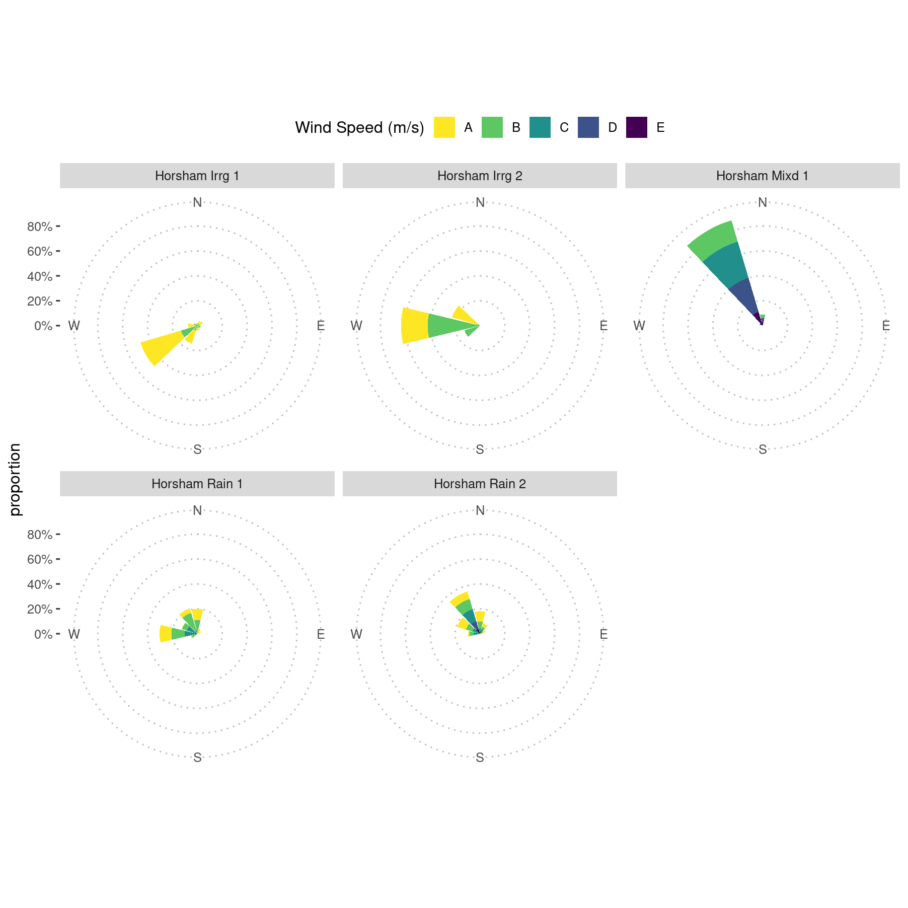

Validate Curyo Wind with Alternate Sources
P. Melloy and A.H. Sparks
2020-08-12
Source:vignettes/a06_Validate_Curyo_weather.Rmd
a06_Validate_Curyo_weather.Rmdlibrary("tidyverse") library("skimr") library("ggpubr") library("kableExtra") library("scales") library("ChickpeaAscoDispersal") library("stationaRy") library("bomrang") library("clifro") library("leaflet") library("htmltools") library("lubridate") library("ggplot2") theme_set(theme_pubclean(base_size = 14)) knitr::opts_chunk$set(fig.width = 9.4, fig.height = 9.4)
# run only if knitting on new computer
# this is necessary to embed fonts in .eps files for EJPP
library("extrafont")
if (.Platform$OS.type == "windows") {
font_import(pattern = "arial", prompt = FALSE)
loadfonts(device = "postscript", quiet = TRUE)
} else {
font_import(pattern = "Arial", prompt = FALSE)events <- read_csv( system.file( "extdata", "Dispersal_experiment_dates.csv", package = "ChickpeaAscoDispersal", mustWork = TRUE ) ) %>% mutate(`assessment date` = dmy(`assessment date`)) %>% mutate(exposed = interval(`time out`, `time removed`))
Background
During the experimental analysis as the data were being visualised, a03_Visualise_data.html, it became apparent that the Curyo wind data were perhaps incorrect due to the wind vane of the station not being properly calibrated. The on-site weather station recorded the wind direction as coming from the north, blowing towards the south. However, conidia were recorded travelling up to 75 meters from the infested stubble north, against the wind during the spread event. The Dr. Fanning confirmed this weather station did not have the wind vane calibrated recently.
This vignette is aimed at comparing the wind direction and wind speed to nearby weather stations.
Data import
First we will import the weather data from the Curyo which we suspect to have inaccurate wind direction. The data will be formatted and filtered to only contain weather data during when the trap plants were exposed in the field.
Curyo_w <- read_csv( system.file( "extdata", "Curyo_SPA_2019_weather.csv", package = "ChickpeaAscoDispersal", mustWork = TRUE ) ) %>% select(Time, 'Wind Speed - average (km/h)', 'Wind Direction - average (º)', "Rainfall - (mm)") %>% mutate(Time = dmy_hm(Time)) %>% mutate(Location = "Curyo") %>% select(Location, everything()) %>% rename(ws = `Wind Speed - average (km/h)`) %>% rename(wd = `Wind Direction - average (º)`) %>% rename(rainfall = `Rainfall - (mm)`) %>% mutate(ws = ws / 3.6) %>% # convert from km/h to m/s filter(Time %within% events[6, "exposed"])
Because the data that we download from Bureau of Meteorology (BOM) will be in one hour increments, we will aggregate the 10 minute data to one hourly.
Curyo_w <- Curyo_w %>% mutate(Day = day(Time)) %>% mutate(Hour = hour(Time)) %>% group_by(Hour, Day) %>% summarise(ws = mean(ws), wd = circular.averaging(wd)) %>% mutate(Location = "Curyo") %>% arrange(Day, Hour) %>% ungroup() %>% mutate(Time = seq( from = events[events$site == "Curyo", ]$`time out`, to = events[events$site == "Curyo", ]$`time removed`, by = "hour" )) %>% rename(time = Time) %>% select(Location, time, everything())
Next we will import data from a second weather station operated by the Birchip Ag Group approximately 10 kilometres from where our trial took place that Dr. Fanning was able to provide for comparison.
BCG <- read_csv( system.file( "extdata", "BCG_weather_data.csv", package = "ChickpeaAscoDispersal", mustWork = TRUE ), skip = 1) %>% mutate(time = dmy_hm(`Reading Time`)) %>% mutate(`Wind Speed` = `Wind Speed` / 3.6) %>% # convert from km/h to m/s mutate(Location = "BCG") %>% select(Location, everything()) %>% rename(ws = `Wind Speed`) %>% rename(wd = `Wind Direction`) %>% rename(rh = Humidity) %>% rename(temp = Temperature) %>% rename(rainfall = `Rainfall`) %>% mutate( wd = case_when( wd == "N" ~ 0, wd == "NNE" ~ 22.5, wd == "NE" ~ 45, wd == "ENE" ~ 67.5, wd == "E" ~ 90, wd == "ESE" ~ 112.5, wd == "SE" ~ 135, wd == "SSE" ~ 157.5, wd == "S" ~ 180, wd == "SSW" ~ 202.5, wd == "SW" ~ 225, wd == "WSW" ~ 247.5, wd == "W" ~ 270, wd == "WNW" ~ 292.5, wd == "NW" ~ 315, wd == "NNW" ~ 337.5 ) ) %>% filter(time %within% events[6, "exposed"])
The BCG weather station data also need to be aggregated into one hour increments as well.
Curyo_alt <- BCG %>% mutate(Day = day(time)) %>% mutate(Hour = hour(time)) %>% group_by(Hour, Day) %>% summarise(ws = mean(ws), wd = circular.averaging(wd)) %>% mutate(Location = "BCG") %>% arrange(Day, Hour) %>% ungroup() %>% mutate(time = seq( from = events[events$site == "Curyo", ]$`time out`, to = events[events$site == "Curyo", ]$`time removed`, by = "hour" )[1:58]) %>% select(Location, time, everything()) skim(Curyo_alt)
| Name | Curyo_alt |
| Number of rows | 58 |
| Number of columns | 6 |
| _______________________ | |
| Column type frequency: | |
| character | 1 |
| numeric | 4 |
| POSIXct | 1 |
| ________________________ | |
| Group variables | None |
Variable type: character
| skim_variable | n_missing | complete_rate | min | max | empty | n_unique | whitespace |
|---|---|---|---|---|---|---|---|
| Location | 0 | 1 | 3 | 3 | 0 | 1 | 0 |
Variable type: numeric
| skim_variable | n_missing | complete_rate | mean | sd | p0 | p25 | p50 | p75 | p100 | hist |
|---|---|---|---|---|---|---|---|---|---|---|
| Hour | 0 | 1 | 11.67 | 6.48 | 0.00 | 7.00 | 12.00 | 16.75 | 23.00 | ▆▇▇▇▆ |
| Day | 0 | 1 | 16.03 | 0.77 | 15.00 | 15.00 | 16.00 | 17.00 | 17.00 | ▅▁▇▁▆ |
| ws | 0 | 1 | 2.06 | 1.02 | 0.06 | 1.25 | 2.15 | 2.80 | 4.19 | ▃▃▇▅▂ |
| wd | 0 | 1 | 239.14 | 32.83 | 180.00 | 203.95 | 242.35 | 270.00 | 292.50 | ▇▂▇▇▅ |
Variable type: POSIXct
| skim_variable | n_missing | complete_rate | min | max | median | n_unique |
|---|---|---|---|---|---|---|
| time | 0 | 1 | 2019-10-15 08:00:00 | 2019-10-17 17:00:00 | 2019-10-16 12:30:00 | 58 |
We have data from two weather stations now. However, let’s import data from BOM meteorological stations nearby. We can use the bomrang function sweep_for_stations() to find the closest stations to our experimental site. Because bomrang only obtains historical daily weather information we need to use another package, stationaRy, which can retrieve hourly or 10 minute weather data from the same BOM stations. We then use the station name of the BOM stations in the get_station_metadata() from the stationaRy package to obtain weather station IDs. We need the ids to inform the function get_met_data() from which stations we want weather data.
The get_met_data() function needs to be run through a loop for each station. We place the weather data from each station into a tibble and store it as an element in a list.
curyo_latlong <- c(-35.779312, 142.778332) stat_dat <- get_station_metadata() %>% filter(name %in% sweep_for_stations(curyo_latlong)$name[1:4]) for (i in stat_dat$id) { if (i == stat_dat$id[1]) { BOM_weather_list <- list() } print(stat_dat$name[which(stat_dat$id == i)]) BOM_weather_list[[i]] <- get_met_data(i, years = 2019) %>% filter(time %within% events[6, "exposed"]) %>% mutate(Location = stat_dat$name[which(stat_dat$id == i)]) %>% select(Location, everything()) }
## [1] "HOPETOUN AIRPORT"
## [1] "CHARLTON"Next we bind the data all together in a single tibble called weather_vic.
weather_vic <- bind_rows(BOM_weather_list) weather_vic <- bind_rows(weather_vic, Curyo_w, Curyo_alt) skim(weather_vic)
| Name | weather_vic |
| Number of rows | 235 |
| Number of columns | 13 |
| _______________________ | |
| Column type frequency: | |
| character | 2 |
| numeric | 10 |
| POSIXct | 1 |
| ________________________ | |
| Group variables | None |
Variable type: character
| skim_variable | n_missing | complete_rate | min | max | empty | n_unique | whitespace |
|---|---|---|---|---|---|---|---|
| Location | 0 | 1.0 | 3 | 16 | 0 | 4 | 0 |
| id | 117 | 0.5 | 12 | 12 | 0 | 2 | 0 |
Variable type: numeric
| skim_variable | n_missing | complete_rate | mean | sd | p0 | p25 | p50 | p75 | p100 | hist |
|---|---|---|---|---|---|---|---|---|---|---|
| temp | 157 | 0.33 | 15.05 | 4.26 | 6.50 | 12.55 | 14.75 | 17.90 | 24.7 | ▃▇▇▅▂ |
| wd | 45 | 0.81 | 247.52 | 92.43 | 0.02 | 210.00 | 260.00 | 299.84 | 360.0 | ▂▁▃▇▅ |
| ws | 40 | 0.83 | 3.31 | 2.23 | 0.00 | 2.00 | 3.03 | 4.10 | 10.8 | ▅▇▂▁▁ |
| atmos_pres | 157 | 0.33 | 1012.29 | 1.73 | 1008.70 | 1011.20 | 1012.15 | 1013.48 | 1016.1 | ▃▇▇▆▃ |
| dew_point | 157 | 0.33 | 7.28 | 3.51 | -2.60 | 4.80 | 7.25 | 9.65 | 13.5 | ▁▅▇▇▆ |
| rh | 157 | 0.33 | 64.22 | 22.33 | 18.00 | 46.70 | 65.70 | 80.27 | 100.0 | ▃▇▆▇▇ |
| ceil_hgt | 235 | 0.00 | NaN | NA | NA | NA | NA | NA | NA | |
| visibility | 235 | 0.00 | NaN | NA | NA | NA | NA | NA | NA | |
| Hour | 118 | 0.50 | 11.73 | 6.45 | 0.00 | 7.00 | 12.00 | 17.00 | 23.0 | ▆▆▆▇▆ |
| Day | 118 | 0.50 | 16.04 | 0.77 | 15.00 | 15.00 | 16.00 | 17.00 | 17.0 | ▅▁▇▁▆ |
Variable type: POSIXct
| skim_variable | n_missing | complete_rate | min | max | median | n_unique |
|---|---|---|---|---|---|---|
| time | 0 | 1 | 2019-10-15 08:00:00 | 2019-10-17 18:00:00 | 2019-10-16 13:00:00 | 59 |
Weather station locations
Note the coordinates for the BCG data are not included.
# only take rows 1 and 4. Rows 2, 3 have no data and are not represented in wind roses above sweep_for_stations(curyo_latlong)[c(1, 4)] %>% select(name, lat, lon) %>% bind_rows(tibble(name = "CURYO", lat = curyo_latlong[1], lon = curyo_latlong[2])) %>% leaflet() %>% addTiles() %>% setView(lat = -36, lng = 142.7, zoom = 9) %>% addMarkers(lng = ~ lon, lat = ~ lat, popup = ~ htmlEscape(name)) %>% addScaleBar()
Wind roses
We can visualise the wind speed and direction for each site using wind roses.
pw <- with( weather_vic, windrose( ws, wd, Location, n_col = 4, legend_title = "Wind speed (m/s)" ) ) pw + scale_fill_viridis_d(name = "Wind Speed (m/s)", direction = -1) + xlab("") + theme_pubclean()
![Comparison of wind direction data collected at the Curyo site using the on-site weather station, which was not properly calibrated, and nearby locations, Birchip Group Station’s agriculture farm (BCG) (10 kilometres distant), and Australia BoM weather stations, Hopetoun Airport (39 kilometres) and Charlton (75 kilometres) during the Curyo spread event. BCG’s agriculture farm weather station’s wind direction data were used for the interpretation of conidial dispersal patterns as Curyo’s weather station wind vane was not calibrated.](a06_Validate_Curyo_weather_files/figure-html/wind-rose-1.png)
Comparison of wind direction data collected at the Curyo site using the on-site weather station, which was not properly calibrated, and nearby locations, Birchip Group Station’s agriculture farm (BCG) (10 kilometres distant), and Australia BoM weather stations, Hopetoun Airport (39 kilometres) and Charlton (75 kilometres) during the Curyo spread event. BCG’s agriculture farm weather station’s wind direction data were used for the interpretation of conidial dispersal patterns as Curyo’s weather station wind vane was not calibrated.
From the wind roses, it is apparent that the Curyo weather station is an outlier for direction and possibly wind speed.
Wind Speed Correlations
ggplot(weather_vic, aes(x = time, y = ws)) + geom_point(aes(shape = Location, colour = Location), size = 3.5) + scale_colour_viridis_d()

Visual inspection of the wind speed data comparing the Curyo site with the Birchip Cropping Group data from 10 kilometres away and two BOM stations 40 to 50 kilometres away.
A visual inspection suggests that the wind speed from the Curyo weather station is not suspect and can be used in the model.
Create New Figure 3 Excluding the Curyo Data
Because of the incorrect wind direction data from the Curyo station, a new figure needs to be constructed with the BCG data. This will have wind directions that are more in-line with the actual event, but the speeds are not correct for Curyo.
# The cleaned weather data is autoloaded with the ChickpeaAscoDispersal file # that was created in "Import weather data". # Remove Curyo to create a corrected Figure 3, minus Curyo cleaned_weather <- cleaned_weather %>% filter(site != "Curyo") %>% unite(SpEv, (c("site", "rep"))) %>% rename(ws = wind_speed, wd = wind_direction) %>% mutate( SpEv = case_when( SpEv == "Horsham irrigated_1" ~ "Horsham Irrg 1", SpEv == "Horsham irrigated_2" ~ "Horsham Irrg 2", SpEv == "Horsham irrigated_3" ~ "Horsham Mixd 1", SpEv == "Horsham dryland_1" ~ "Horsham Rain 1", SpEv == "Horsham dryland_2" ~ "Horsham Rain 2" ) ) %>% mutate_at(vars(SpEv), factor) # create figure 3 pw <- with(cleaned_weather, windrose(ws, wd, SpEv, n_col = 3, legend_title = "Wind speed (m/s)")) pw + scale_fill_viridis_d(name = "Wind Speed (m/s)", direction = -1) + xlab("") + theme_pubclean()
## Scale for 'fill' is already present. Adding another scale for 'fill', which
## will replace the existing scale.
# save a .png to refer to while writing and a .eps for publication submission ggsave(here::here("man", "figures/Fig3.png")) ggsave(here::here("man", "figures/Fig3.eps")) embed_fonts( file = here::here("man", "figures/Fig3.eps"), outfile = here::here("man", "figures/Fig3.eps"), options = "-dEPSCrop" )